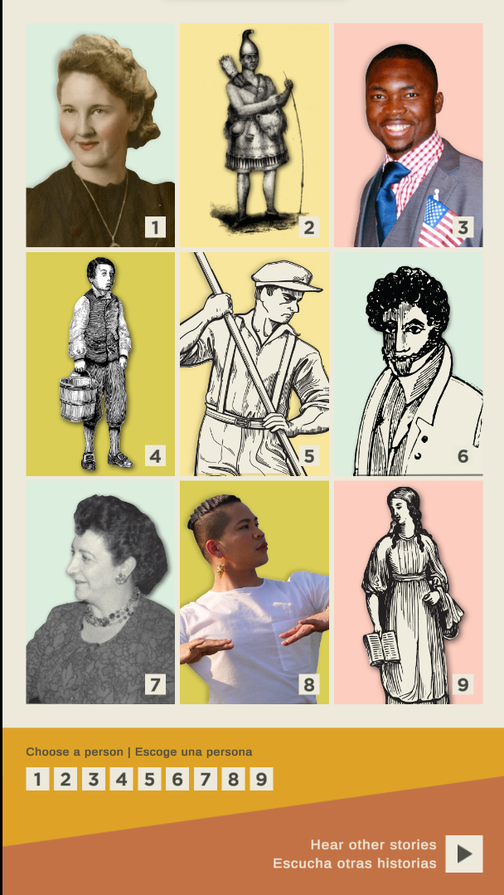
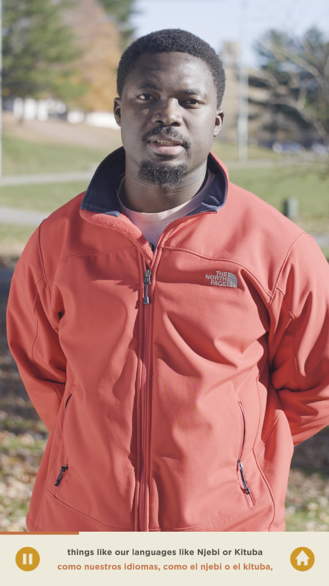

NLP: Lowell "My Experience Station"
A video player interactive developed for Lowell National Historical Park.
I developed all five interactives and the content management system (CMS) for the project. The "My Experience Station" is a standard
video player interactive that plays 9 curated videos submitted for "permanent" display (not totally accurate since they can be updated in the CMS),
and a page that displays a random list of 9 visitor videos submitted from the Story Booth interactive. There are three "My Experience" stations,
each themed around a question being answered by or about the video subjects.
